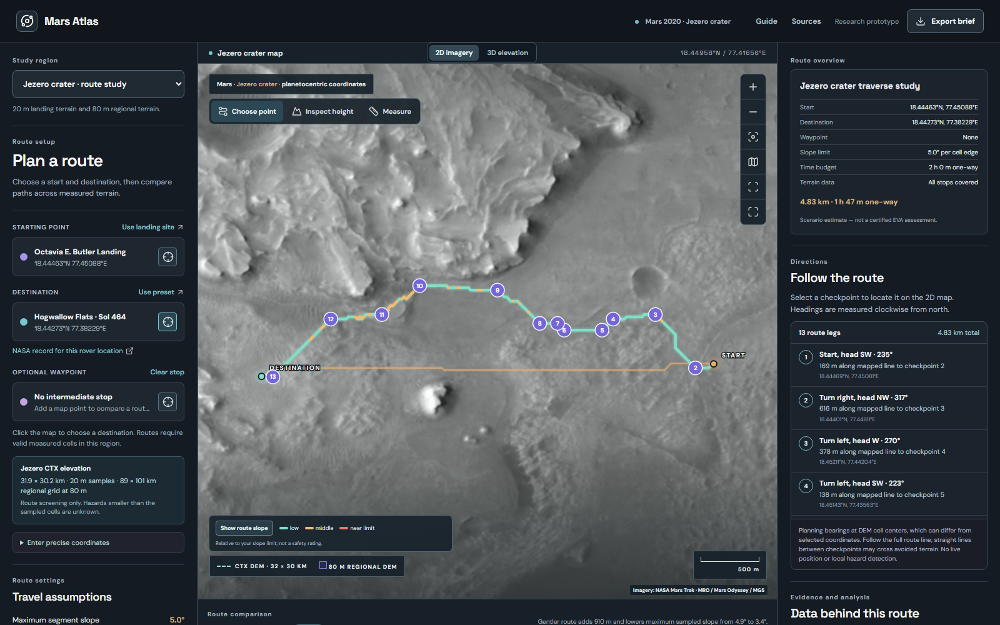

Switch orbital layers
View CTX imagery, HiRISE detail, MOLA hillshade, and historical THEMIS daytime infrared mosaics where available.
Explore cited orbital imagery and measured terrain across Jezero, Gale, and Gusev. Compare possible routes where numerical elevation data is available, then inspect the evidence behind each result.

Every map layer and measured height has a named product. Derived routes are labelled as calculations so a published observation is never confused with a model result.
View CTX imagery, HiRISE detail, MOLA hillshade, and historical THEMIS daytime infrared mosaics where available.
Choose stops, set a slope limit and travel assumptions, and compare computed paths over the packaged elevation samples.
Review north referenced bearings and turns for model checkpoints, then inspect the source record and resolution limits.
Mars Atlas separates NASA mission observations, USGS produced mosaics, partner inputs, and our own calculations. Gusev imagery is shown without pretending that a route DEM is present.
Review the complete resource registerOpen the research workspace, or follow the annotated walkthrough first.